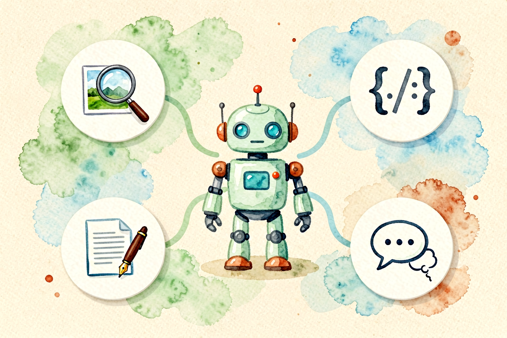
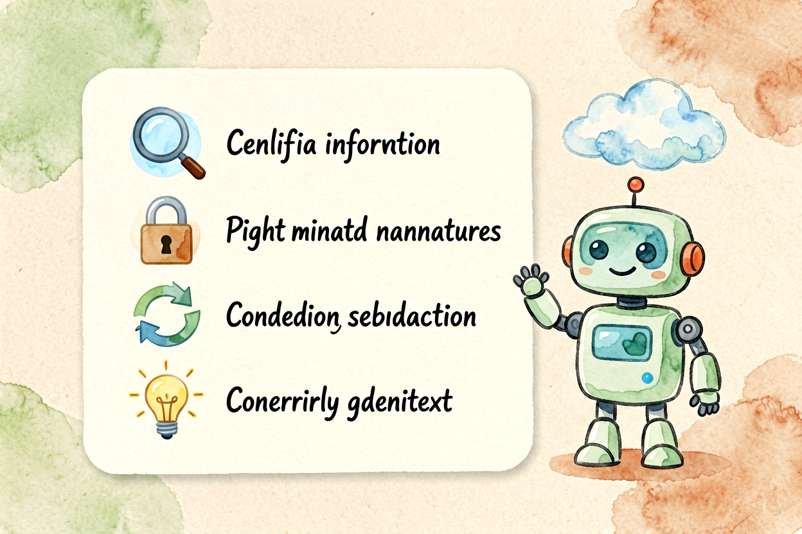
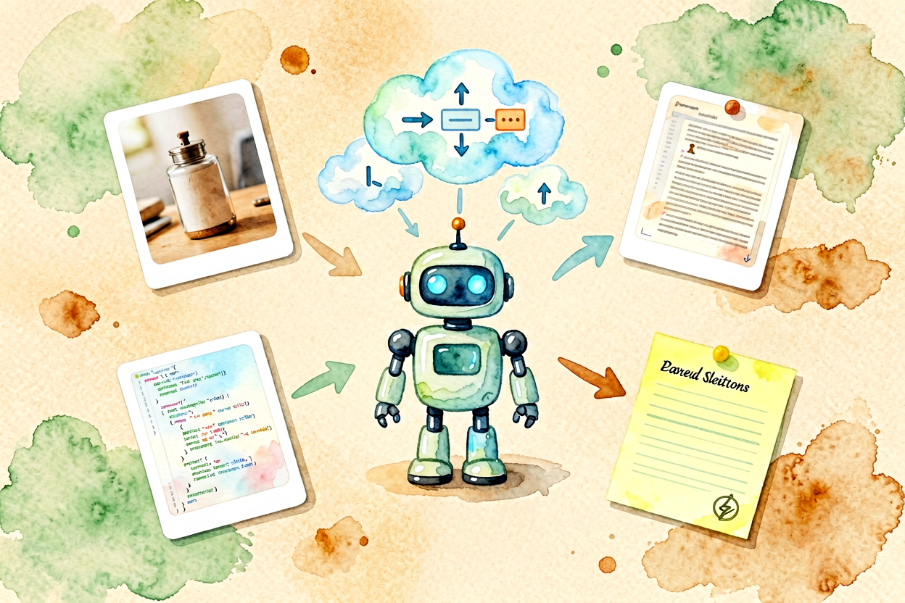

Gemini 新手教程：Google 大模型的全场景使用指南
Gemini 是 Google 的 AI 模型，免费额度大方、Google 生态集成、多模态能力强。本文从零讲清怎么用，新手一小时上手。
Gemini新手教程是本文的核心主题。 !配图1Gemini界面概览
{kind=link}
Gemini新手入门：Google 的 AI 全能选手
Gemini 是 Google 开发的大模型，免费额度大方（每月数万条消息）、Google 生态集成（Gmail、Drive、Docs）、多模态能力强（文本、图片、音频、视频）。国内访问需要代理，但体验稳定。
和Gemini 免费额度评测里讲的对比不同，本文专注 Gemini 本身的使用技巧。Gemini 的优势是免费额度高、Google 生态集成、多模态支持，短板是中文理解略弱于国内模型、国内访问需代理。
Gemini新手入门：注册与访问
打开 gemini.google.com，用 Google 账号登录。免费额度每月数万条消息，足够日常使用。国内访问需要代理，建议使用稳定代理服务。
注册后先做两件事：熟悉界面布局、测试基础功能。Gemini 支持多轮对话、文件上传、代码执行、联网搜索，新手建议先熟悉纯文本对话，再逐步解锁高级功能。
Gemini新手入门：写出高质量的提示词

Gemini 对结构化提示词响应更好，参考AI 提示词怎么写里的 C.L.E.A.R. 框架。示例：
你是资深研究员（角色）。
帮我分析这份行业报告的核心观点（任务）。
报告包含AI、新能源、生物医药三个领域（背景）。
输出表格形式，按领域分类（输出格式）。Gemini 的英文理解比中文更准确，英文提示词效果通常更好。遇到复杂任务，先让 AI 出大纲，再逐段展开，比一次性要长文更稳。
Gemini新手入门：五个高频场景实战
场景一：Google 生态集成直接问「总结一下我 Gmail 里这周的重要邮件」，Gemini 能访问你的 Google 服务（需授权）。适合整理邮件、文档、日历等。
场景二：多模态理解上传图片让 Gemini 分析，它能识别图片内容、提取文字、回答问题。适合图像理解、文档识别、图表分析等。
场景三：代码辅助 Gemini 支持代码生成、调试、解释，适合开发者辅助。即使不会编程，也能让它写简单脚本。
场景四：学习辅导问「用初中生能听懂的话解释量子计算」，Gemini 会换一种表达降低理解门槛。
场景五：头脑风暴 「给我十个关于健康饮食的选题，要求新颖不烂大街」。Gemini 能快速产出大量想法。
Gemini新手入门：常见误区与避坑

误区一：国内访问不稳定 Gemini 在国内需要代理，代理不稳定会导致访问失败。建议使用稳定代理服务。
误区二：中文理解略弱 Gemini 英文理解比中文更准确，中文任务建议用国内模型辅助。
误区三：免费额度有限免费版每月数万条消息，高频用户可能不够用。建议评估需求后再决定是否付费。
关于 Gemini 新手教程，核心经验是「Google 生态是优势，但不是唯一选择」。如果你深度使用 Google 服务，Gemini 是最方便的选择；如果主要用国内服务，DeepSeek 或 Kimi 可能更适合。
Gemini 新手教程的关键是动手试。别看完就忘，当天就生成第一个任务，让操作成为习惯。用多了自然熟练。掌握 Gemini 新手入门的技巧，效率会翻倍。

本文信息核对于 2026-09-07。AI 产品的价格、免费额度与功能变动频繁，实际以各工具官网当前说明为准。